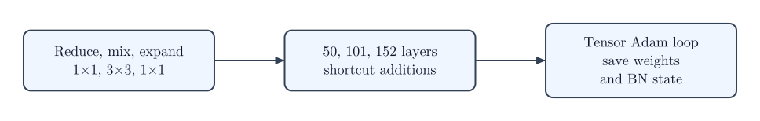
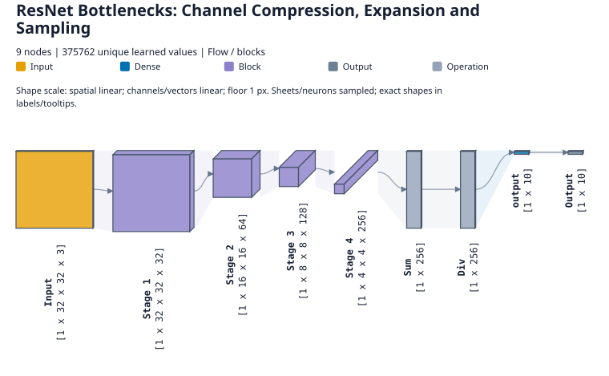
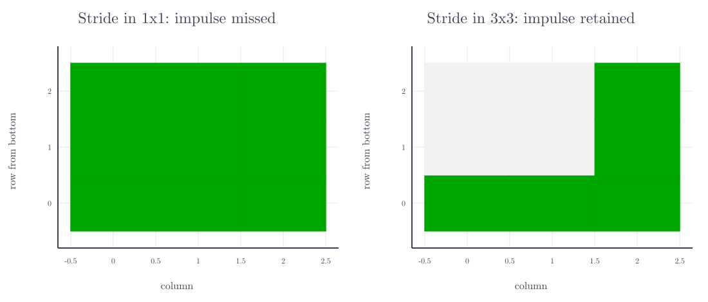
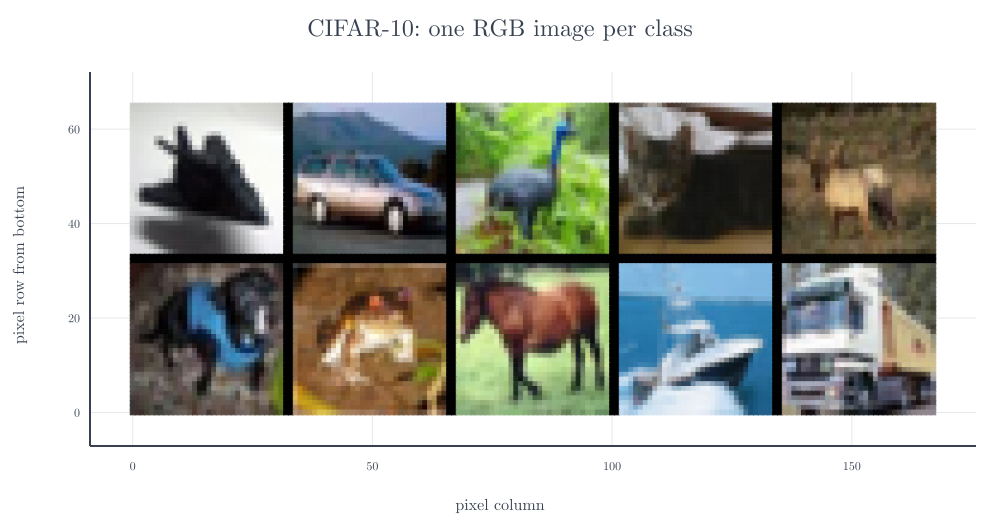
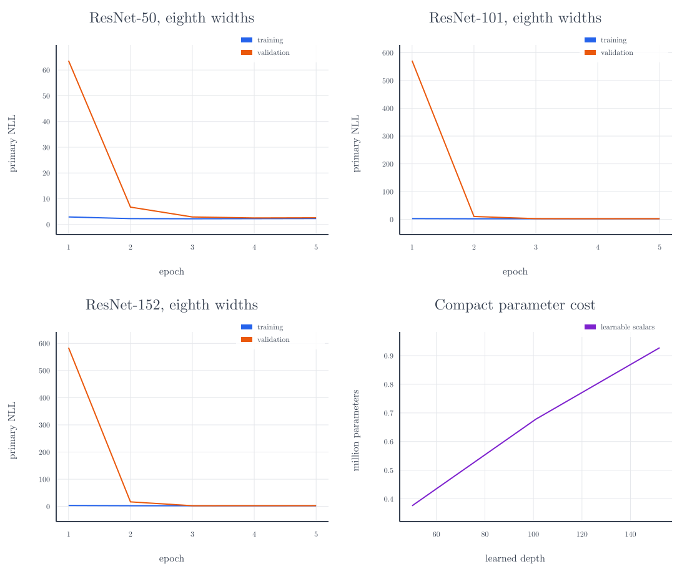
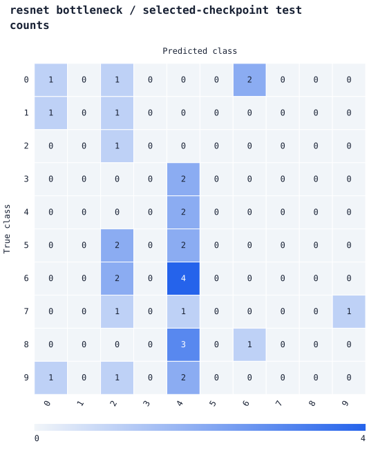
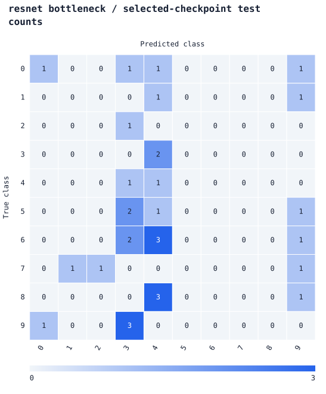
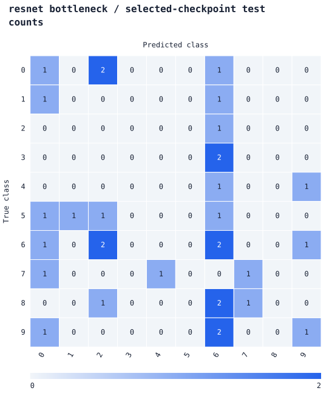

ResNet Bottlenecks: Channel Compression, Expansion and Sampling
Abstract
Deep residual models need to keep expensive spatial filters affordable. Bottlenecks compress channels before a 3×3 filter and expand them before shortcut addition. We inspect their exact sampling rule, verify all five-stage geometries for ResNet-50/101/152, and fit each full-depth compact topology with explicit tensor Adam updates and paired parameter/state checkpoints.
Source example: examples/cpp/source/nn/1_convolutional_neural_networks/1.3_residual_and_dense_families/resnet_bottleneck.cpp.
The method
A bottleneck applies bias-free 1×1 reduction, 3×3 spatial mixing and 1×1 expansion. The first two use BN/ReLU; the last uses BN without ReLU. With inner width w, the block emits 4w channels. Identity shortcuts apply only when the input already has that width and stride one; other cases use normalized 1×1 projections. The sum is followed by ReLU, so zero residuals still yield ReLU(shortcut), with negative-input clipping just as in the basic-block report.
For equal input/output width C=4w, the branch kernel cost is
Two basic 3×3 filters at outer width C would instead use 18 C² kernel weights. This compares kernel arithmetic at the same outer width, excluding BN, shortcut projections, memory and nonlinearities; the blocks have different capacity. For w=2 and C=8 the bottleneck has 68 kernel weights. Its learned pointwise reduction is a structural restriction, not a general identity for every possible dense spatial transform.
Original bottlenecks place stage downsampling in the first 1×1 convolution. The optional
stride_on_3x3 setting moves it to the spatial filter (often called v1.5). A pointwise stride-two
filter samples rows/columns 0,2,4 and cannot see an impulse at (1,1). A stride-one reduction
followed by stride-two 3×3 mixing does see it. The fixture shares weights, sets the shortcut
to zero and compensates inference BN scaling, producing zero versus a 2×2 patch of fours
in every output channel. This checks sampling, not a claim that either variant is always better.
ResNet-50/101/152 use block counts 3/4/6/3, 3/4/23/3 and 3/8/36/3. Learned depth equals three per block plus stem and classifier, excluding projection shortcuts. Full 224-pixel stages end at 56/28/14/7 with channels 256/512/1024/2048. Learned counts are 25557032, 44549160 and 60192808; separate moving-statistic counts are 53120, 105344 and
- The stem uses symmetric 7×7/2 padding and padded 3×3/2 max-pooling. BN learns
scale and offset with epsilon 1e-5 and eager unbiased-variance moving updates. No pretrained weights or dropout are used. Full forward and compact training-gradient checks are distinct.
The dataset block keeps all layers, original bottleneck stride placement, one-eighth widths and a 3×3 stride-one small-image stem. It fits 64 original CIFAR-10 images, validates on 32 and evaluates 32 official-test images only after selection. Five epochs use batch sixteen, Adam(.001), explicit kernel L2=.0001/2 and independent tensor crop/flip augmentation. Both parameter and moving-state checkpoints restore together. This four-stage CIFAR adaptation is a bounded CPU demonstration, not the original ImageNet training recipe or a depth ranking.
The concept diagram below is drawn by dm::graphics::Diagram. Its editable C++
source is the complete block below; regeneration uses the same datamunge toolchain
as the numerical examples. Exports consume the saved local SVG.
#include <dm/dm.hpp>
int main() {
std::filesystem::create_directories("build");
dm::graphics::Diagram diagram;
diagram.node("n0", {0.0, 0}, "Reduce, mix, expand\n1×1, 3×3, 1×1");
diagram.node("n1", {5.2, 0}, "50, 101, 152 layers\nshortcut additions");
diagram.node("n2", {10.4, 0}, "Tensor Adam loop\nsave weights\nand BN state");
diagram.edge("n0", "n1").edge("n1", "n2");
diagram.save_svg("build/resnet_bottleneck_concept.svg");
}
Executed tensor architecture
This figure executes the inference configuration shown in the code, using a zero-valued shape probe without fitting or loading a checkpoint. Named stage boundaries group whole subgraphs where available; other nodes retain functional-layer detail. Exact batch-inclusive shapes and reachable parameter totals come from the trace. Shared linear scales map spatial dimensions and channel counts to blocks; the one-pixel visibility floor is disclosed in the legend. Labels use compact monospace text, rotate counterclockwise and sit beside their own glyphs. Arrows flow left to right; wide diagrams scroll at native size on the website.
#include <dm/dm.hpp>
int main() {
namespace n = dm::nn;
namespace m = n::models;
n::set_num_threads(2);
std::filesystem::create_directories("build");
const int depth = 50;
n::models::ResNetConfig cfg;
cfg.depth = depth;
cfg.classes = 10;
cfg.width_divisor = 8;
cfg.small_stem = true;
cfg.momentum = .9;
n::ParameterStore p(17), state(17);
n::Module architecture_model(
[&](const n::Tensor& image) {
const auto out = n::models::ResNet(p, state, image, cfg, false);
auto previous = image;
for (std::size_t i = 0; i < out.stages.size(); ++i) {
n::model_stage("Stage " + std::to_string(i + 1), previous, out.stages[i]);
previous = out.stages[i];
}
return out.logits;
},
"ResNet Bottlenecks: Channel Compression, Expansion and Sampling");
n::ModelPlotOptions options;
options.style = n::ModelPlotStyle::Flow;
options.detail = n::ModelPlotDetail::Blocks;
options.labels = {.type = n::ModelPlotLabel::NameAndShape, .size = 12, .wrap = 24};
options.spacing = {.layer = 24, .lane = 12, .label = 8, .margin = 20};
options.sizing.spatial_size = 96;
options.sizing.channel_size = 42;
options.sizing.minimum_extent = 1;
options.opacity = .8;
const auto diagram = architecture_model.plot(n::zeros({1, 32, 32, 3}), options);
diagram.save_svg("build/resnet_bottleneck_architecture.svg");
std::print(
"{} displayed nodes; {} reachable learned values.\n",
diagram.nodes().size(),
diagram.parameter_count());
}9 displayed nodes; 375762 reachable learned values.

Simple sampling example
A one-pixel input and shared all-one branch filters make the stride-placement difference hand-checkable.
#include <dm/dm.hpp>
int main() {
namespace n = dm::nn;
const auto type = n::DType::Float64;
n::ParameterStore p(17, type), state(17, type);
n::models::ResNetNormConfig cfg;
cfg.scale = true;
cfg.epsilon = 1e-5;
const auto x =
n::one_hot(n::tensor({48}).to(n::DType::Int64), 200, 1, 0, type).reshape({1, 5, 5, 8});
{
n::NoGradGuard guard;
n::models::ResNetBlock(p, state, "b", x, 2, cfg, 2, true);
}
for (const auto &name : p.names()) {
const auto shape = p.at(name).shape();
if (name.ends_with("/W"))
p.set(name,
name.starts_with("b/shortcut") ? n::zeros(shape, type) : n::ones(shape, type));
if (name.ends_with("/gamma"))
p.set(name, n::full(shape, std::sqrt(1 + cfg.epsilon), type));
}
const auto early = n::models::ResNetBlock(p, state, "b", x, 2, cfg, 2, true, false);
const auto later = n::models::ResNetBlock(p, state, "b", x, 2, cfg, 2, true, true);
if (n::max(early.output).item() != 0 || std::abs(n::max(later.output).item() - 4) > 1e-12 ||
std::abs(n::sum(later.output).item() - 128) > 1e-10)
return 1;
if (p.at("b/conv1/W").shape() != n::Shape{1, 1, 8, 2} ||
p.at("b/conv3/W").shape() != n::Shape{1, 1, 2, 8})
return 1;
auto first_channel = [](const n::Tensor &t) {
return n::slice_axis(t, 3, 0, 1).reshape({3, 3});
};
auto layout = dm::graphics::RLayout::create(1, 2);
layout
.add(n::plot_tensor_map(first_channel(early.output), 0, 4)
.title("Stride in 1x1: impulse missed"))
.add(n::plot_tensor_map(first_channel(later.output), 0, 4)
.title("Stride in 3x3: impulse retained"));
std::filesystem::create_directories("build");
layout.size(1100, 470).fit_panels().save_svg("build/resnet_bottleneck_stride.svg");
std::print(
"Width-two bottleneck: 8 -> 2 -> 2 -> 8 channels, kernels contain 8*2+9*2*2+2*8=68 "
"weights.\nStride in 1x1 gives zero; stride in 3x3 gives four on a 2x2 patch in each of "
"eight output channels, total 128. Shortcut is zeroed only for this fixture.\n");
}Width-two bottleneck: 8 -> 2 -> 2 -> 8 channels, kernels contain 8*2+9*2*2+2*8=68 weights. Stride in 1x1 gives zero; stride in 3x3 gives four on a 2x2 patch in each of eight output channels, total 128. Shortcut is zeroed only for this fixture.

Checking full topology
Full reference counts and stage dimensions use a zero-input inference pass without backward storage. Separate compact graphs verify finite derivatives through every learned tensor with complete depth.
#include <dm/dm.hpp>
int main() {
namespace n = dm::nn;
n::set_num_threads(2);
const std::vector<std::tuple<int, int64_t, int64_t>> settings{
{50, 25557032, 53120}, {101, 44549160, 105344}, {152, 60192808, 151424}};
for (auto [depth, expected_count, expected_state] : settings) {
n::NoGradGuard guard;
n::ParameterStore p(17), state(17);
n::models::ResNetConfig cfg;
cfg.depth = depth;
const auto out = n::models::ResNet(p, state, n::zeros({1, 224, 224, 3}), cfg);
const bool bottleneck = depth >= 50;
if (p.count() != expected_count || state.count() != expected_state ||
out.stem.shape() != n::Shape{1, 56, 56, 64} || out.logits.shape() != n::Shape{1, 1000})
return 1;
for (int i = 0; i < 4; ++i) {
const int64_t side = 56 / (1 << i), channels = (64 << i) * (bottleneck ? 4 : 1);
if (out.stages[i].shape() != n::Shape{1, side, side, channels})
return 1;
}
if ((bottleneck ? 3 : 2) * int(out.blocks.size()) + 2 != depth)
return 1;
std::print("Full ResNet-{}: {} learned scalars, {} moving scalars; {} blocks and all "
"stage shapes verified.\n",
depth, p.count(), state.count(), out.blocks.size());
}
for (auto [depth, expected_count, expected_state] : settings) {
n::ParameterStore p(17), state(17);
n::Generator rng(29);
n::models::ResNetConfig cfg;
cfg.depth = depth;
cfg.classes = 3;
cfg.width_divisor = 8;
cfg.small_stem = true;
cfg.update_stats = false;
const auto x = n::normal({2, 32, 32, 3}, 0, .2, rng);
const auto out = n::models::ResNet(p, state, x, cfg, true);
const auto saved = state.flatten();
const auto gradients = n::grad(n::mean(n::square(out.logits)), p.parameters());
for (const auto &g : gradients)
if (!std::isfinite(n::sum(n::abs(g)).item()))
return 1;
n::NoGradGuard guard;
n::models::ResNet(p, state, x, cfg, false);
if (state.flatten() != saved)
return 1;
std::print("Compact ResNet-{}: every one of {} parameter-tensor gradients is finite; "
"inference leaves moving state unchanged.\n",
depth, gradients.size());
}
}Full ResNet-50: 25557032 learned scalars, 53120 moving scalars; 16 blocks and all stage shapes verified. Full ResNet-101: 44549160 learned scalars, 105344 moving scalars; 33 blocks and all stage shapes verified. Full ResNet-152: 60192808 learned scalars, 151424 moving scalars; 50 blocks and all stage shapes verified. Compact ResNet-50: every one of 161 parameter-tensor gradients is finite; inference leaves moving state unchanged. Compact ResNet-101: every one of 314 parameter-tensor gradients is finite; inference leaves moving state unchanged. Compact ResNet-152: every one of 467 parameter-tensor gradients is finite; inference leaves moving state unchanged.
Dataset example
The original class-ordered images appear before augmentation, matching the basic-block report.
#include <dm/dm.hpp>
int main() {
namespace n = dm::nn;
std::filesystem::path cache;
if (const auto *p = std::getenv("DATAMUNGE_DATA_DIR"))
cache = p;
else if (const auto *p = std::getenv("XDG_CACHE_HOME"))
cache = std::filesystem::path(p) / "datamunge/datasets";
else
cache = std::filesystem::path(std::getenv("HOME")) / ".cache/datamunge/datasets";
dm::datasets::fetch("cifar10", (cache / "cifar10").string());
const auto raw =
n::data::LoadCifar({cache / "cifar10/data_batch_1.bin"}, n::data::Cifar::k10);
const auto images = n::cast(raw.images, n::DType::Float32) / 255.;
const auto labels = raw.labels;
std::vector<int64_t> rows;
for (int cls = 0; cls < 10; ++cls) {
for (int64_t row = 0; row < labels.numel(); ++row)
if (labels.at({row}) == cls) {
rows.push_back(row);
break;
}
}
if (rows.size() != 10)
return 1;
std::filesystem::create_directories("build");
n::plot_tensor_images(n::take_rows(images, rows), 5)
.title("CIFAR-10: one RGB image per class")
.size(1000, 530)
.save_svg("build/resnet_bottleneck_inputs.svg");
std::print("One original cached training image per class, IDs 0..4 then 5..9.\n");
}One original cached training image per class, IDs 0..4 then 5..9.

#include <dm/dm.hpp>
int main() {
int rendered_confusions = 0;
namespace n = dm::nn;
n::set_num_threads(2);
std::filesystem::path cache;
if (const auto* p = std::getenv("DATAMUNGE_DATA_DIR"))
cache = p;
else if (const auto* p = std::getenv("XDG_CACHE_HOME"))
cache = std::filesystem::path(p) / "datamunge/datasets";
else
cache = std::filesystem::path(std::getenv("HOME")) / ".cache/datamunge/datasets";
dm::datasets::fetch("cifar10", (cache / "cifar10").string());
const auto raw = n::data::LoadCifar({cache / "cifar10/data_batch_1.bin"}, n::data::Cifar::k10);
const auto images = n::cast(raw.images, n::DType::Float32) / 255.,
labels = n::cast(raw.labels, n::DType::Int64);
const auto tx = n::slice_axis(images, 0, 0, 64), ty = n::slice_axis(labels, 0, 0, 64);
const auto vx = 2 * n::slice_axis(images, 0, 64, 96) - 1, vy = n::slice_axis(labels, 0, 64, 96);
const auto official = n::load_cifar10((cache / "cifar10").string(), "test");
const auto qx = 2 * n::slice_axis(official.images, 0, 0, 32) - 1,
qy = n::slice_axis(official.labels, 0, 0, 32);
std::filesystem::create_directories("build");
auto layout = dm::graphics::RLayout::create(2, 2);
std::vector<double> depths, counts, moving, selected, train_nll, validation_nll, test_nll,
accuracy;
for (int depth : {50, 101, 152}) {
n::models::ResNetConfig cfg;
cfg.depth = depth;
cfg.classes = 10;
cfg.width_divisor = 8;
cfg.small_stem = true;
cfg.momentum = .9;
n::ParameterStore p(17), state(17);
auto output = [&](const n::Tensor& input, bool training) {
return n::models::ResNet(p, state, input, cfg, training).logits;
};
{
n::NoGradGuard guard;
output(n::zeros({1, 32, 32, 3}), false);
}
n::OptimizerConfig config;
config.kind = n::OptimizerKind::Adam;
n::Optimizer optimizer(p, .001, config);
n::BatchOrder batches(64, 16, 2026);
n::Generator augmentation(151);
const std::string checkpoint = "build/resnet_bottleneck_" + std::to_string(depth);
double best = std::numeric_limits<double>::infinity();
int best_epoch = 0;
std::vector<double> epochs, train, validation;
for (int epoch = 1; epoch <= 5; ++epoch) {
batches.begin_epoch();
n::WeightedMean average;
for (auto rows = batches.next(); !rows.empty(); rows = batches.next()) {
const auto batch = n::take_rows(tx, rows), target = n::take_rows(ty, rows);
std::vector<n::Tensor> transformed;
for (int64_t row = 0; row < batch.size(0); ++row) {
auto image =
n::pad(n::slice_axis(batch, 0, row, row + 1), {{0, 0}, {4, 4}, {4, 4}, {0, 0}});
image = n::augment::random_crop(image, 32, 32, augmentation);
transformed.push_back(n::augment::random_flip_left_right(image, augmentation));
}
const auto nll = n::sparse_softmax_cross_entropy(
output(2 * n::concat(transformed, 0) - 1, true), target);
auto objective = nll;
for (const auto& w : p.parameters())
if (w.dim() >= 2)
objective = objective + .00005 * n::sum(n::square(w));
optimizer.minimize(objective);
average.add(nll.item(), rows.size());
}
n::NoGradGuard guard;
const double val = n::sparse_softmax_cross_entropy(output(vx, false), vy).item();
if (!std::isfinite(val))
return 1;
epochs.push_back(epoch);
train.push_back(average.value());
validation.push_back(val);
if (val < best) {
best = val;
best_epoch = epoch;
p.save(checkpoint + "_params.npz");
state.save(checkpoint + "_state.npz");
}
}
p.load(checkpoint + "_params.npz");
state.load(checkpoint + "_state.npz");
n::NoGradGuard guard;
const auto prediction = output(qx, false);
n::ConfusionMatrix native_confusion(10);
native_confusion.add(qy, n::argmax(prediction, 1));
n::save_npz("build/resnet_bottleneck_heldout_"+std::to_string(rendered_confusions)+".npz",{{"truth",qy},{"logits",prediction},{"counts",native_confusion.to_tensor()}});
native_confusion.save_svg(
"build/resnet_bottleneck_confusion_api_" + std::to_string(rendered_confusions++) + ".svg",
{.title = "resnet bottleneck / selected-checkpoint test counts"});
const double test_loss = n::sparse_softmax_cross_entropy(prediction, qy).item();
if (!std::isfinite(test_loss))
return 1;
depths.push_back(depth);
counts.push_back(p.count());
moving.push_back(state.count());
selected.push_back(best_epoch);
validation_nll.push_back(best);
train_nll.push_back(n::sparse_softmax_cross_entropy(output(2 * tx - 1, false), ty).item());
test_nll.push_back(test_loss);
accuracy.push_back(n::accuracy(prediction, qy));
auto plot = dm::graphics::RPlot::create();
plot.lines(epochs, train, "training", {37, 99, 235})
.lines(epochs, validation, "validation", {234, 88, 12})
.title("ResNet-" + std::to_string(depth) + ", eighth widths")
.x_label("epoch")
.y_label("primary NLL");
layout.add(plot);
std::print("ResNet-{}: {} explicit Adam updates.\n", depth, optimizer.iterations());
}
auto cost = dm::graphics::RPlot::create();
std::vector<double> millions;
for (double count : counts)
millions.push_back(count / 1e6);
cost.lines(depths, millions, "learnable scalars", {126, 34, 206})
.title("Compact parameter cost")
.x_label("learned depth")
.y_label("million parameters");
layout.add(cost);
dm::dstruct::DataFrame table;
table.add_column("depth", depths);
table.add_column("parameters", counts);
table.add_column("moving_state", moving);
table.add_column("best_epoch", selected);
table.add_column("selected_train_NLL", train_nll);
table.add_column("validation_NLL", validation_nll);
table.add_column("test_NLL", test_nll);
table.add_column("test_accuracy", accuracy);
std::print("64 fit / 32 validation / 32 official-test rows per depth.\n\n{}\n", table.to_md(6));
layout.size(1100, 920).fit_panels().save_svg("build/resnet_bottleneck_training.svg");
}ResNet-50: 20 explicit Adam updates. ResNet-101: 20 explicit Adam updates. ResNet-152: 20 explicit Adam updates. 64 fit / 32 validation / 32 official-test rows per depth.
| depth | parameters | moving_state | best_epoch | selected_train_NLL | validation_NLL | test_NLL | test_accuracy |
|---|---|---|---|---|---|---|---|
| 50 | 375762 | 6640 | 4 | 3.322343 | 2.535353 | 2.829318 | 0.12500 |
| 101 | 678226 | 13168 | 4 | 2.722744 | 2.300288 | 2.540110 | 0.06250 |
| 152 | 927698 | 18928 | 3 | 6.305659 | 2.466474 | 4.491720 | 0.15625 |

The executed results above report the current selected checkpoint. These fixed small subsets and source budgets do not establish a ranking of architectures. Assess training, validation and test NLL together with the complete held-out confusion. Augmented or batch-moment training objectives and saved-state inference can differ; weak or below-chance outcomes remain part of the result. The independent geometry, parameter-count and derivative checks establish separate implementation claims.
Native confusion matrices
These matrices use the held-out predictions from the executed program above.
The native ConfusionMatrix SVG API labels exact counts with true classes
running from top to bottom and predicted classes from left to right.



Regenerate every adjacent view
Each alternate architecture or held-out confusion below is copied from this run's local build directory.
#include <dm/dm.hpp>
int main(){std::filesystem::create_directories("build");std::filesystem::copy_file("build/resnet_bottleneck_confusion_api_0.svg","build/export_resnet_bottleneck_confusion_api_0.svg",std::filesystem::copy_options::overwrite_existing);}#include <dm/dm.hpp>
int main(){std::filesystem::create_directories("build");std::filesystem::copy_file("build/resnet_bottleneck_confusion_api_1.svg","build/export_resnet_bottleneck_confusion_api_1.svg",std::filesystem::copy_options::overwrite_existing);}#include <dm/dm.hpp>
int main(){std::filesystem::create_directories("build");std::filesystem::copy_file("build/resnet_bottleneck_confusion_api_2.svg","build/export_resnet_bottleneck_confusion_api_2.svg",std::filesystem::copy_options::overwrite_existing);}Conclusion
Bottlenecks trade a narrow learned spatial pathway for a wider residual representation. Stride placement changes the evidence entering that pathway even with shared weights. Exact sampling fixtures, complete-depth shape/count checks, finite gradients and explicit subset fits test these separate claims without asserting benchmark performance or universal depth benefits.
References
- [He et al. (2016), Deep Residual Learning for Image Recognition](https://arxiv.org/abs/1512.03385).
- [Authors' ResNet-50 topology](https://github.com/KaimingHe/deep-residual-networks/blob/master/prototxt/ResNet-50-deploy.prototxt).
- [CIFAR-10 dataset](https://www.cs.toronto.edu/~kriz/cifar.html).